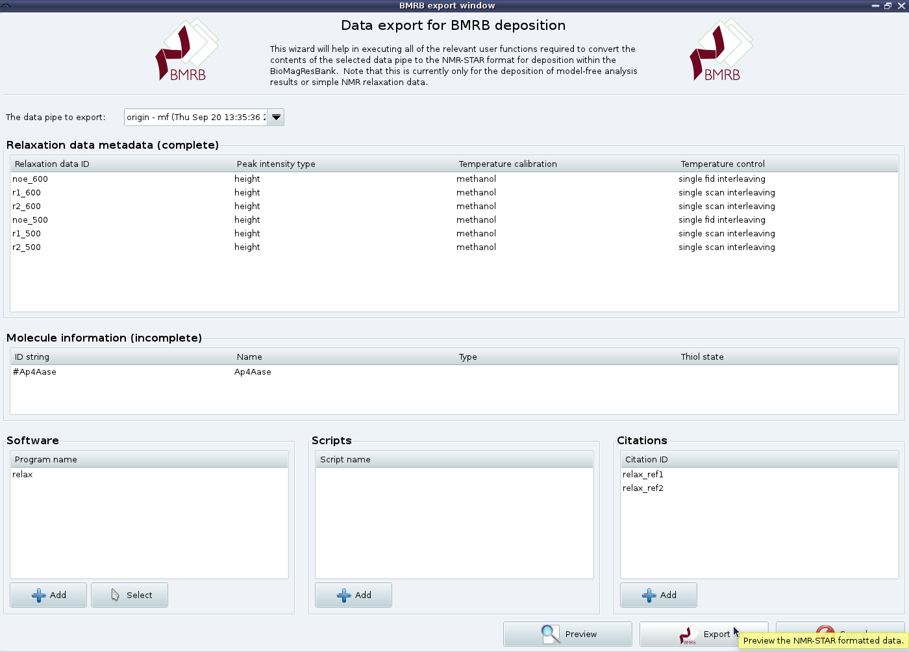

Next: Reduced spectral density mapping Up: The new protocol in Previous: d'Auvergne protocol GUI mode Contents Index
Once you are ready to publish your results, the very last step of the model-free analysis is to create a NMR-STAR formatted file for BioMagResBank submission for each model-free analysis you perform. This can be accomplished using the BMRB export window. Simply select the ``File→Export for BMRB deposition'' menu item. You will then see the BMRB export window:
|

|
From here you can complete the relaxation data metadata if needed, set up all the molecule information needed for a BMRB deposition, specify the software you have used running up to the model-free analysis and any spectral processing or relax scripts you have used. You can also add as many citations relevant to your analysis as you wish. The NMR-STAR formatted file can be previewed in the relax controller window via the ``Preview'' button and the final file created using the ``Export'' button.
Once you are in the stage of writing up, simply go to the ADIT-NMR webpage at http://deposit.bmrb.wisc.edu/bmrb-adit/, create a new BMRB deposition, upload the file you have created, complete the deposition as needed, and add the BMRB deposition number to your paper.